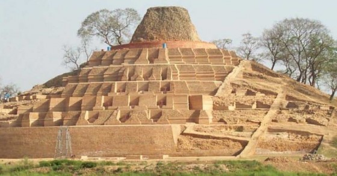

East Champaran is one of the developed district of Bihar. East Champaran is the second most crowded district of Bihar. The district gets its name from the union of two words, champa and aranya. Champa alludes to scented blossom trees and Aranya alludes to the home or an encased spot. The name began back in when the district was encircled by a backwoods of magnolia (champa) trees.Someshwar Nath Mahadev Mandir is a well established temple situated in Areraj. The significant divinity of the heavenly temple is of Lord Shiva.Explorers and pilgrims of Lord Shiva go to the holy place from India as well as from Nepal. The merriments on the event of an occasional reasonable known as Shrawani Mela, during July and August, are really pleasant. There are numerous different temples nearby around and thusjust, Areraj is known as the holy place of East Champaran.Kesariya is arranged on the eastern banks of the river Gandak and views the enormous 104-feet-tall stupa, which is viewed as the tallest Buddhist stupa. In like manner, Kesariya orders conspicuous situations in East Champaran the travel industry just as history of Buddhism. The stupa was found in the year 1998.
